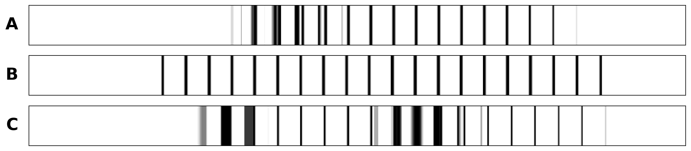
Advanced Machine Learning
This slide deck is still under active development. Expect changes before it is finalized.
What does “the same” mean to a computer?

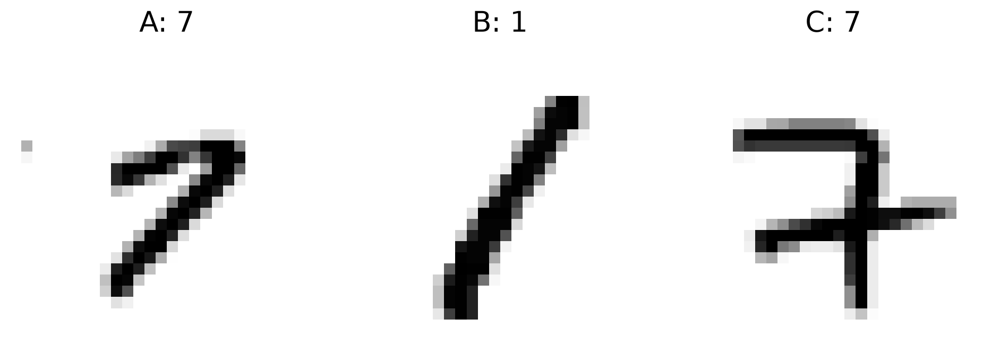
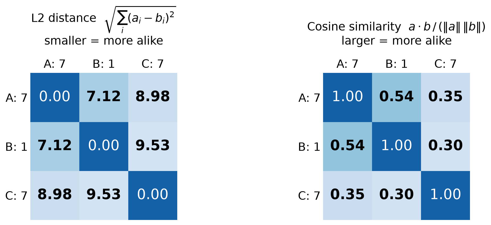
The two 7s are not more similar to each other than to the 1
A representation is a vector that describes an input.
Pixels
Features from a CNN
Our Goals:
If two representations have a high similarity they are the same digit
If two representations have a low similarity they are different digits
We’re going to talk about two ways to do representations:
Then we’ll apply them to image comparison
A linear representation in less dimensions
Describe each image using only the most relevant dimensions
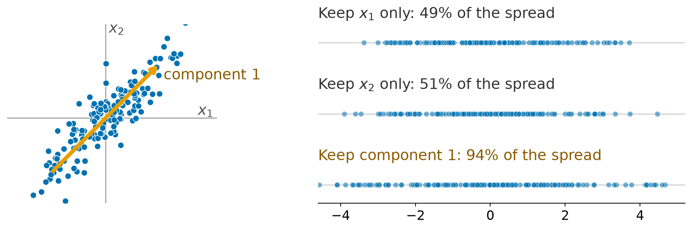
If we have to keep only one dimension, which one is best?
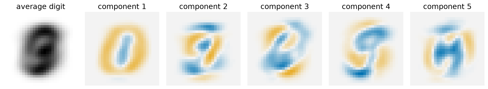
Foreshadowing: This kind of feels like filters, doesn’t it?
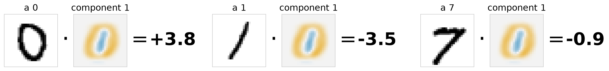
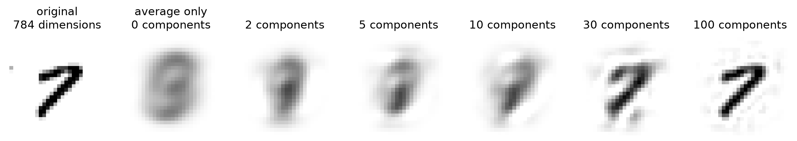
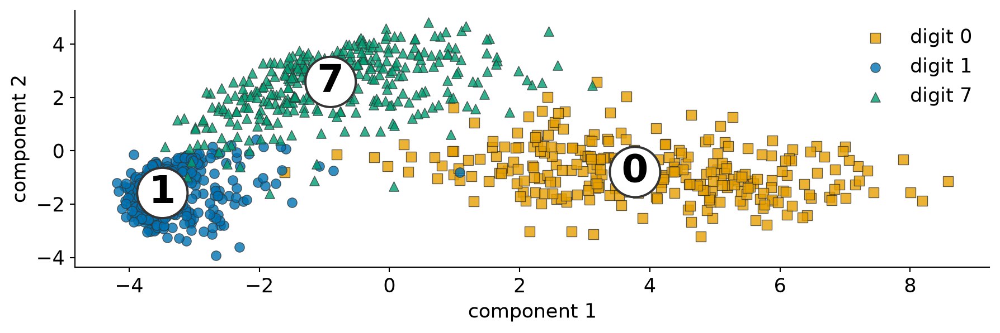
Center the data: Subtract the average image, \mathbf{x} - \mathbf{\mu}
Calculate Covariance:
Find Components:
Project onto a lower number of dimensions (e.g. k dimensions):
\mathbf{z} is the new, k-dimensional representation of \mathbf{x}
(3000, 784) -> (3000, 2)Vt is one component: 784 weightsZ is what we plotted: every image reduced to 2 dimensions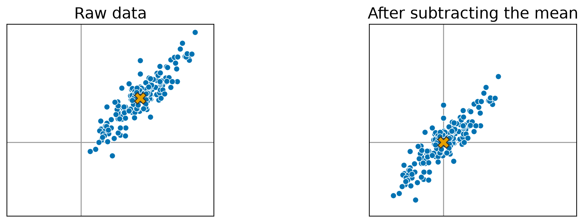
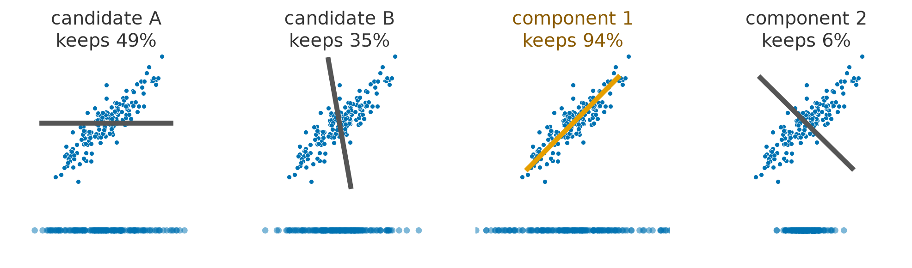
\mathbf{z} = W^\top (\mathbf{x} - \mathbf{\mu})
| Keep k | W^\top | \mathbf{x} - \mathbf{\mu} | \mathbf{z} |
|---|---|---|---|
| 2 | 2 × 784 | 784 | 2 |
| 30 | 30 × 784 | 784 | 30 |
| 100 | 100 × 784 | 784 | 100 |
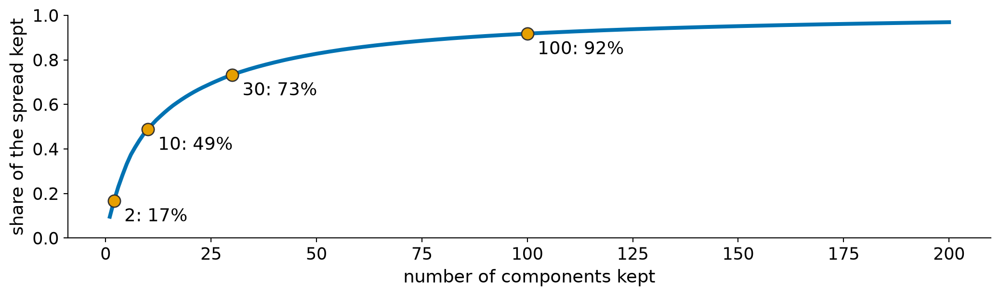
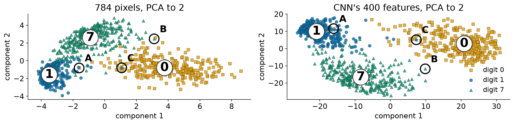
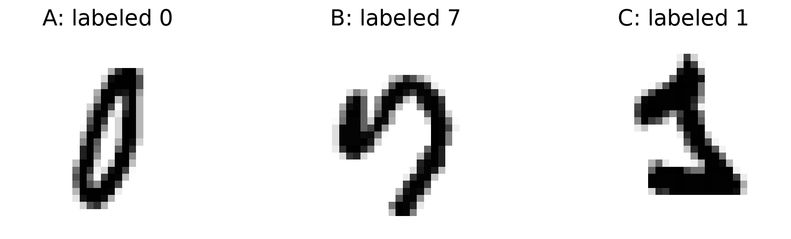
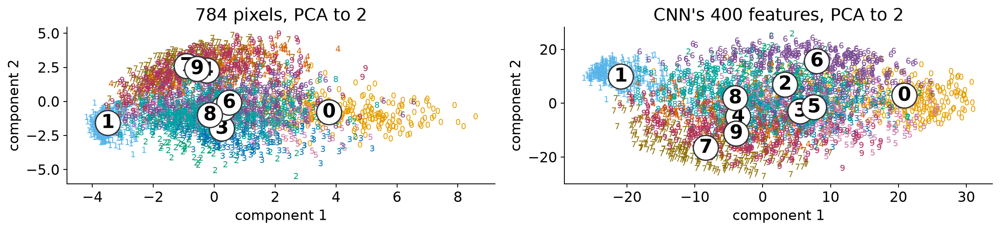
| % @ 2 components | Components for 50% | Components for 90% | |
|---|---|---|---|
| PCA on 784 pixels | 17% | 11 | 85 |
| PCA on CNN’s 400 features | 28% | 6 | 42 |
PCA builds new dimensions, out of a linear combination of the original ones, maximizing information per dimension.
It keeps the biggest differences, not necessarily the ones we care about.
Keep the features, replace the head
A network trained on one task has learned a representation. For a new task with little data, keep that representation and train only a small new part on top.
What we already have
What we want
Can we reuse the CNN, instead of starting over with 100 images?
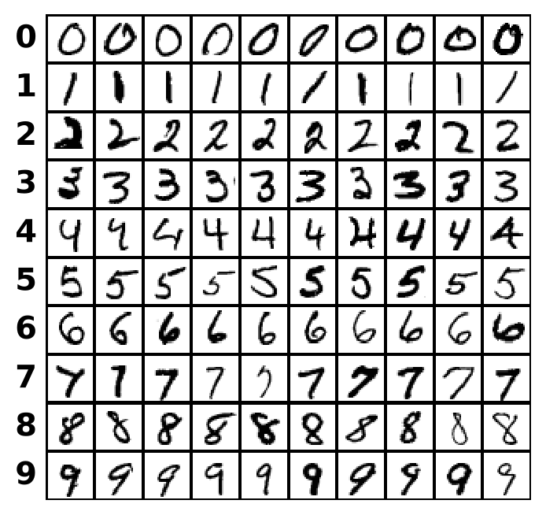
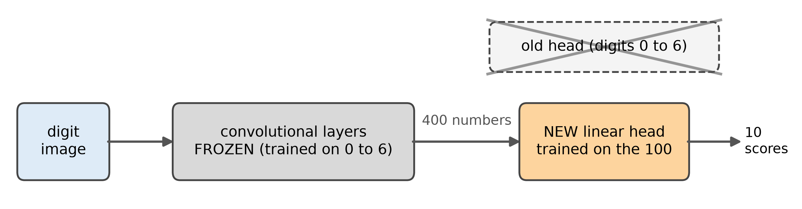
| Method | Trained on | Tested on all | on 0 to 6 | on 7 to 9 |
|---|---|---|---|---|
| Linear on pixels | the 100 | 76% | 78% | 70% |
| CNN from scratch | the 100 | 81% | 82% | 76% |
| Frozen features + head | 0 to 6, then the 100 | 89% | 91% | 84% |
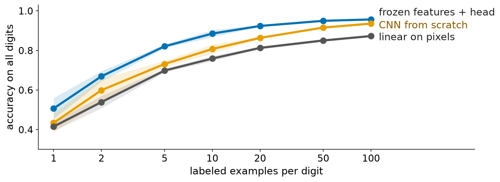
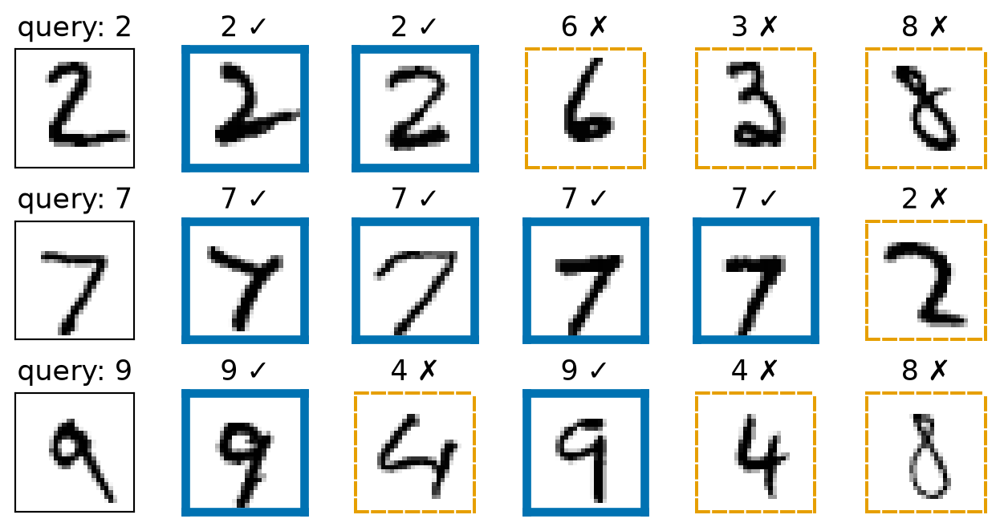
Learn what “the same” means
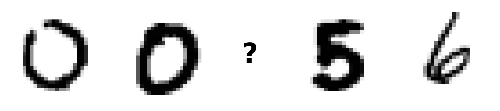
Instead of learning to name the classes, learn an embedding where things that are the same are close together and things that are different are far apart.
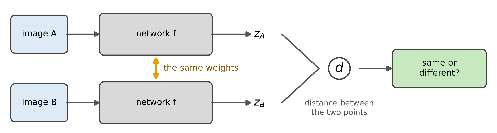
import torch
from torch import nn
class Twin(nn.Module):
def __init__(self, dim=2):
super().__init__()
self.f = nn.Sequential( # the classifier's conv layers
nn.Conv2d(1, 6, 3), nn.ReLU(), nn.MaxPool2d(2),
nn.Conv2d(6, 16, 3), nn.ReLU(), nn.MaxPool2d(2),
nn.Flatten(), nn.Linear(400, dim)) # down to `dim` numbers
def forward(self, x1, x2):
z1, z2 = self.f(x1), self.f(x2) # called twice
return (z1 - z2).pow(2).sum(1).add(1e-8).sqrt() # distance per pair
dist = Twin()(torch.zeros(5, 1, 28, 28), torch.zeros(5, 1, 28, 28))
print(dist.shape)torch.Size([5])self.f is created once, so both calls use the same weights1e-8 keeps the gradient finite when two points land on top of each otherL = y \, d^2 + (1 - y) \, \max(0, \, m - d)^2
| Pair | y | 1 - y | The loss becomes |
|---|---|---|---|
| Same | 1 | 0 | 1 \cdot d^2 + 0 \cdot \max(0, m - d)^2 = d^2 |
| Different | 0 | 1 | 0 \cdot d^2 + 1 \cdot \max(0, m - d)^2 = \max(0, m - d)^2 |
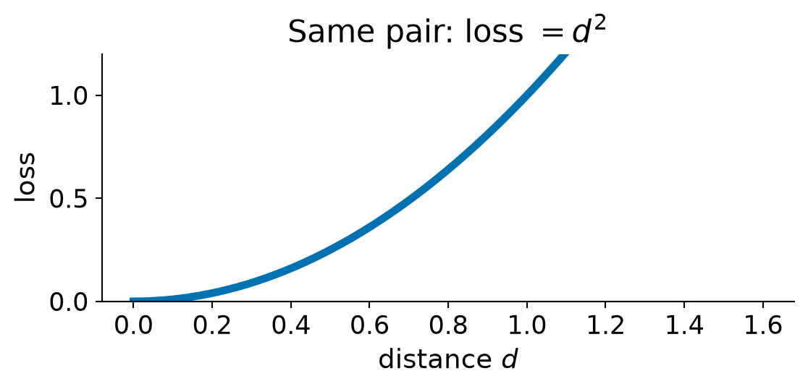
Pull (y = 1): the loss is d^2
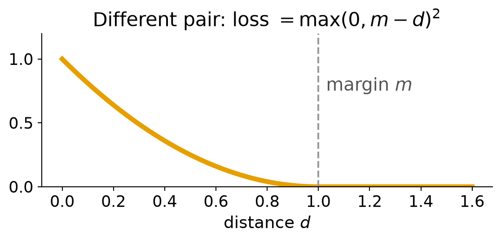
Push (y = 0): the loss is \max(0, m - d)^2
| Same pairs, y = 1 | The formula with the numbers in | Loss |
|---|---|---|
| d = 0.2 | 1 \cdot 0.2^2 + 0 \cdot \max(0, \, 1 - 0.2)^2 | 0.04 |
| d = 0.9 | 1 \cdot 0.9^2 + 0 \cdot \max(0, \, 1 - 0.9)^2 | 0.81 |
| Different pairs, y = 0 | The formula with the numbers in | Loss |
|---|---|---|
| d = 0.3 | 0 \cdot 0.3^2 + 1 \cdot \max(0, \, 1 - 0.3)^2 | 0.49 |
| d = 1.4 | 0 \cdot 1.4^2 + 1 \cdot \max(0, \, 1 - 1.4)^2 | 0.00 |
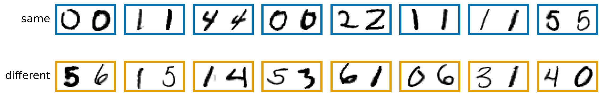
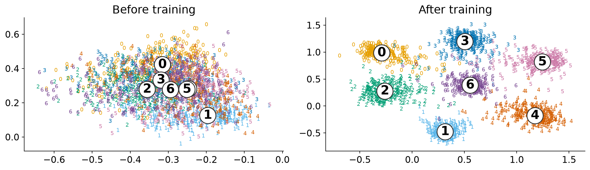
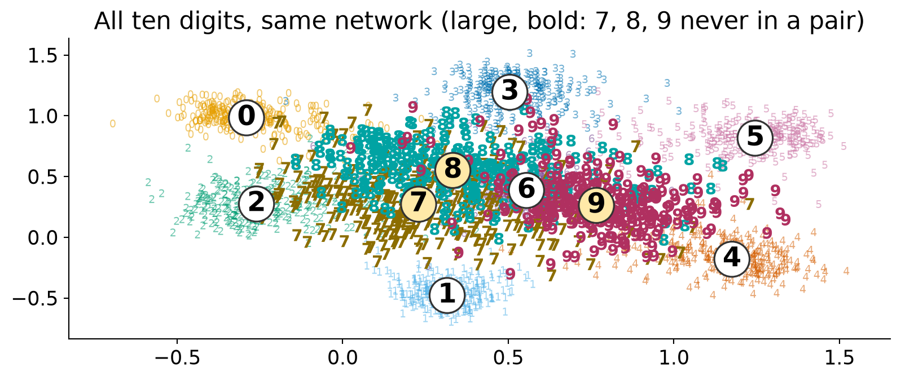
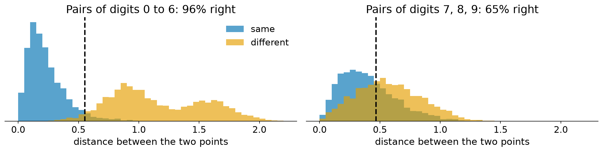
| Closest in | All digits | Digits 0 to 6 | Digits 7 to 9 |
|---|---|---|---|
| Raw pixels | 43% | 46% | 33% |
| Classifier’s features | 57% | 62% | 44% |
| Twin network, 2-D | 67% | 84% | 25% |
| Twin network, 8-D | 80% | 93% | 48% |
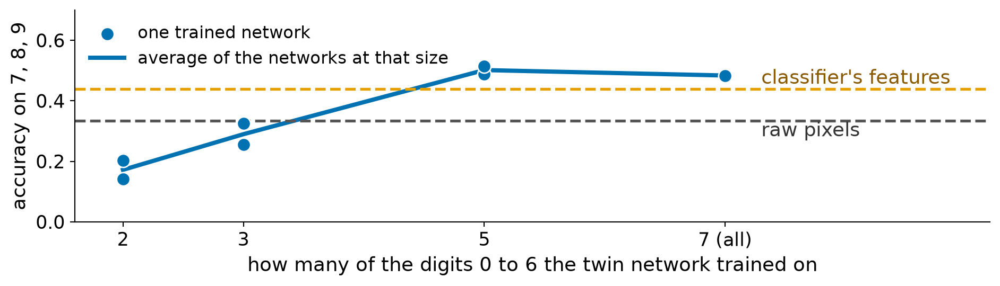
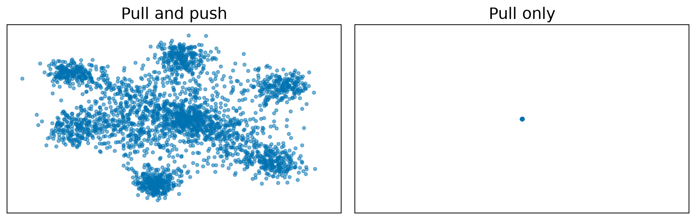
A classifier learns names for the classes it was given. A twin network learns what “the same” means, and that carries over to new classes only as far as the classes it trained on cover them.
| PCA | Classifier’s features | Twin embedding | |
|---|---|---|---|
| Built by | Keeping the most spread | Training to name the classes | Training on same / different pairs |
| Uses labels? | No | Yes | Yes, to make the pairs |
| Linear? | Yes | No | No |
| Good for | Looking at data, using fewer dimensions | Reusing on a new task with few labels | Asking whether two things are the same |
CST463 · Advanced Machine Learning